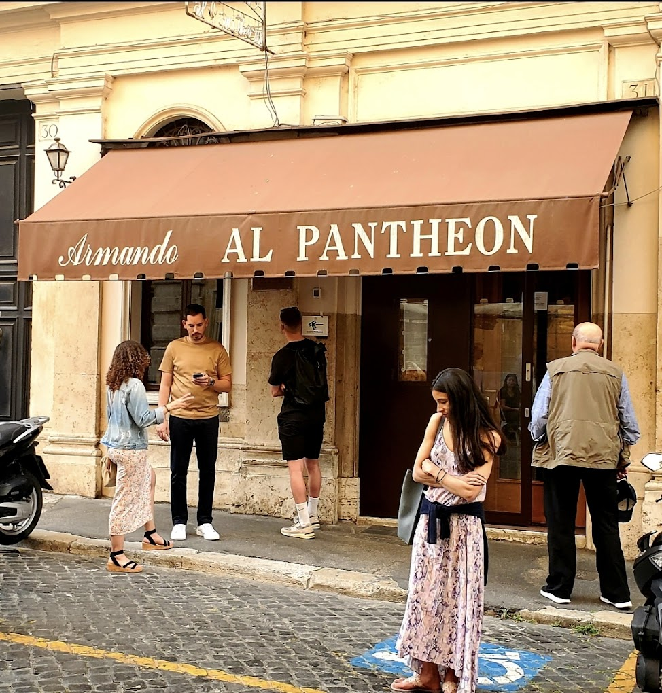
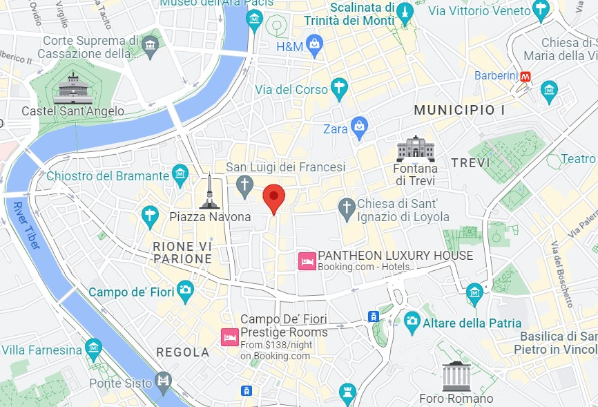
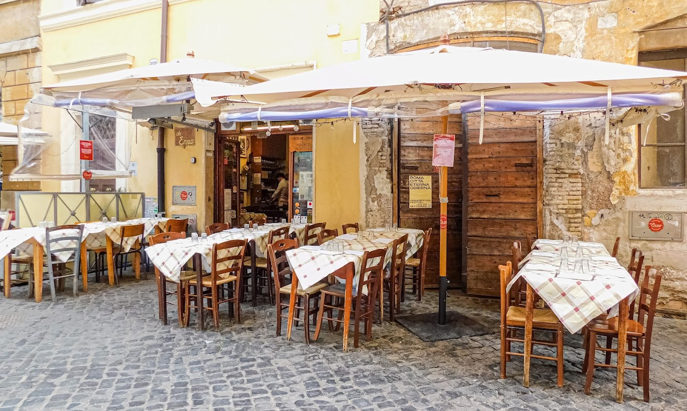
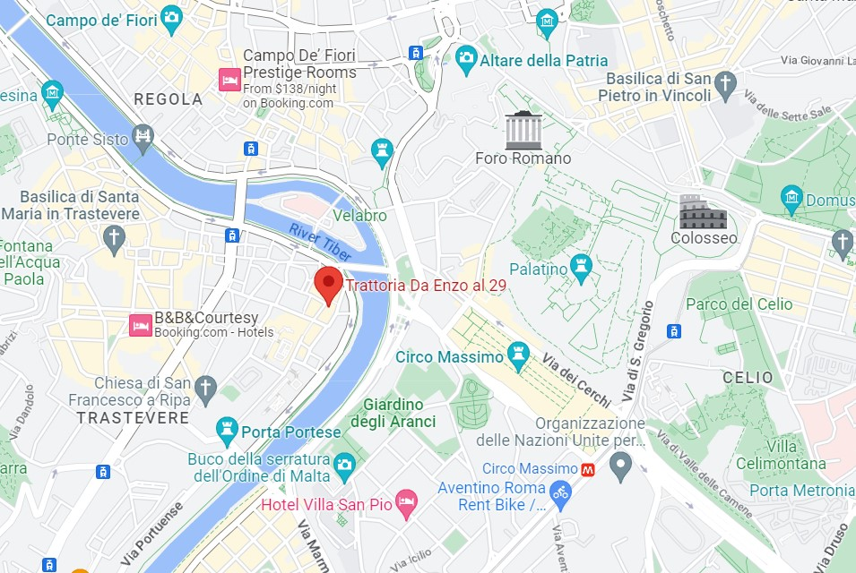
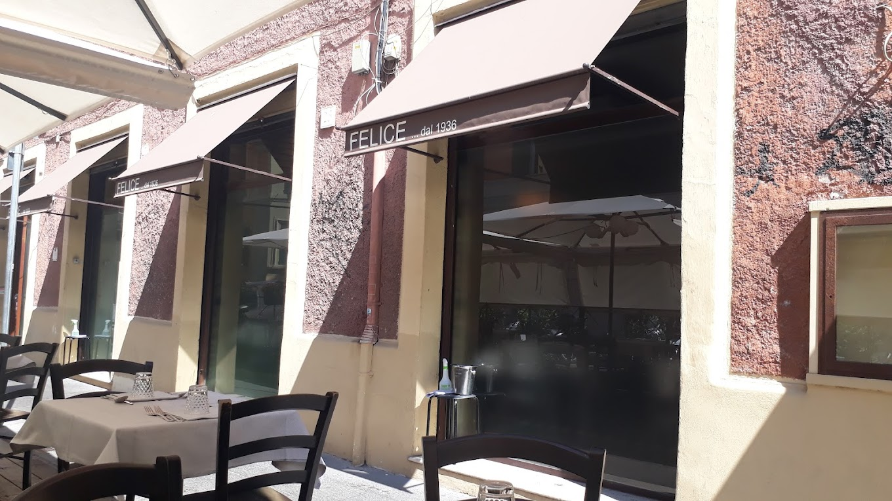
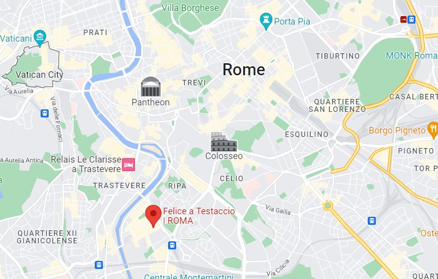

Top #1 Restaurant: Armando al Pantheon


Armando al Pantheon is a traditional trattoria right next to the famous Pantheon of Rome. For being so close to the city's popular areas, right in the heart of the centro historico, one can only assume it'd be one of those touristy restaurants with dull, overpriced food.
But it is not. This family-run restaurant serves some of the city's most traditional and authentic roman dishes on the walls, paintings and drawings from previous clients, and on the menu, different special plates on different days of the week.
There is plenty of pasta, pizza, meat, and fish options to pick from, all cooked in honor of traditional roman cuisine. Take a seat in the small, comfortable dining room and pair a spaghetti carbonara with a bottle from the extensive wine list.
Website for Armando al Pantheon
Top #2 Restaurant: Da Enzo al 29


Da Enzo al 29 is a trattoria that shows how powerful simplicity can be.
In this tiny venue in the quiet street of Trastevere, you can find well-served portions that can keep you entertained for hours. The classic carbonara dish is always a good choice, and the house tiramisu never disappoints. Order multiple bottles of wine and share a multi-course meal like an authentic Italian.
The place, for being small and humble, usually has a long line of people waiting to sit – arrive a bit earlier to skip the lunch rush hour.
Top #3 Restaurant: Felice e Testaccio


Felice e Testaccio is already one of the best gastronomic neighborhoods in Rome, so that this restaurant would make it to the list. Felice e Testaccio is one of those old-school restaurants you expect to find in Rome. White tablecloths, retro checkered floors, and white plates with the restaurant's name printed on the rim.
Serving an extensive menu of traditional Roman dishes, their specialty is the cacio e peppe – a classic that shows how simplicity sometimes is the most challenging art to master.